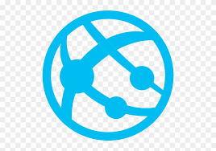
In this week's workshop you will learn how to build a simple web app in VSC and run it locally. The web app will give you the foundations on which to display your sensor data as you will call your HTTP Trigger function from the web app to pull in the JSON data for displaying in a basic web interface. Please see the below diagram where the role of the web app is presented for this module and the assessment:
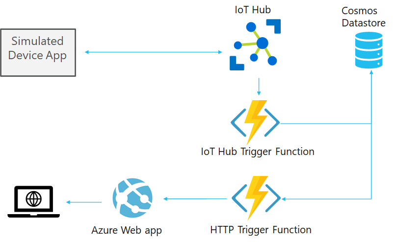
-As a reminder, last week in workshop 6 you created a serverless function of the type HTTP Trigger that when called it would retrieve the sensor data from your Cosmos Database in JSON format. The sensor data at this point is just returned as raw JSON data when you call the function. For this workshop you will create a basic web app that will call the function and retrieve the JSON data and displaying in on a basic web interface. You will be given some of the code for this, but not code to parse the JSON data and present it in a formatted fashion. You are advised to develop your function code so that it only returns the relevant data to the web app, making it easy to view and understand the values, you can even add extra functions just to return string values, such as the latest value of a sensor.
There are no more major cloud services to be created and worked on for the assessment after this week, everything that is required for the assessment is displayed in the above diagram. The remaining lectures and workshops after this week will be focused on covering concepts such as DevOps, publsihing all of your services to the cloud, and support.
First, create a folder on your computer called MyFirstAzureWebApp, in this example it is under My Documents space but you can place it almost anywhere. However, please avoid develop code files on a USB drive or folders that are monitored by third party such as Dropbox or OneDrive as you may run into errors.
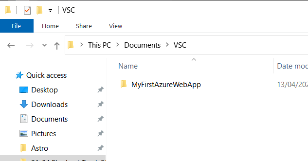
Next open VSC, and installthe Azure Tools extension as shown below:
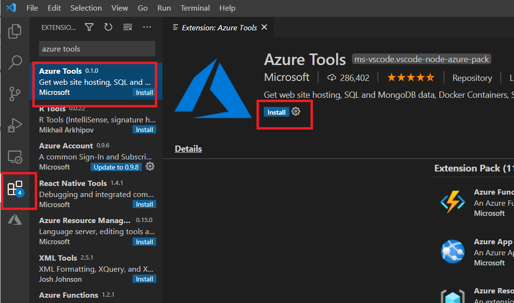
Now File > Open Folder and browse to the MyFirstAzureWebApp folder you creared and open it, it will now be displayed in VSC:
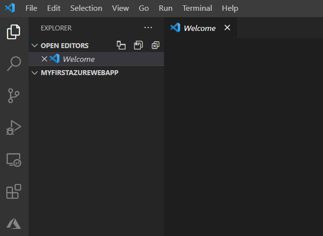
Now click on the New Terminal option as shown below:
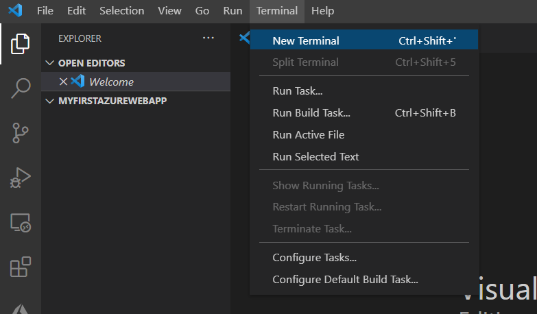
At the terminal type in:
dotnet new webapp -f netcoreapp3.1
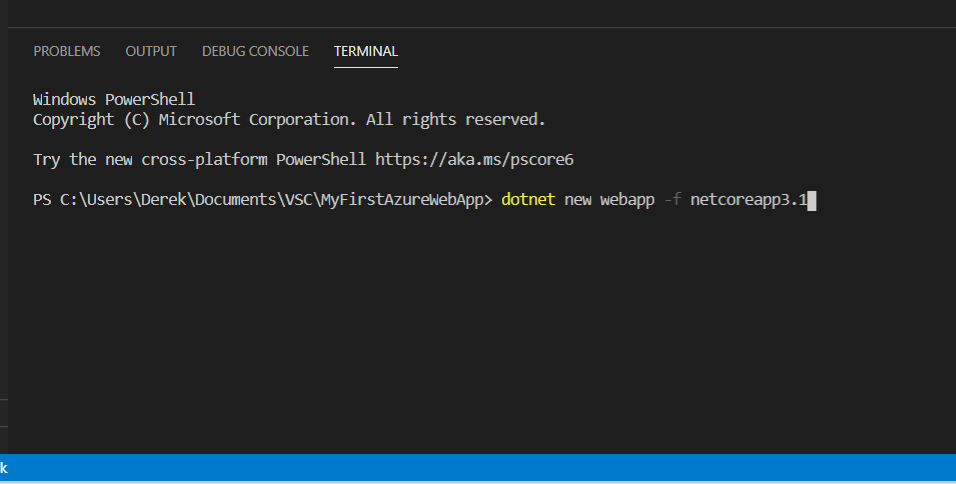
A new web app will be created inside the MyFirstAzureWebApp folder. Now run the new web app with the below command:
dotnet run
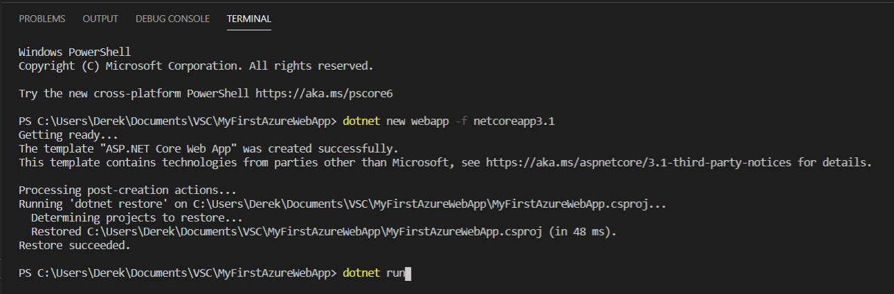
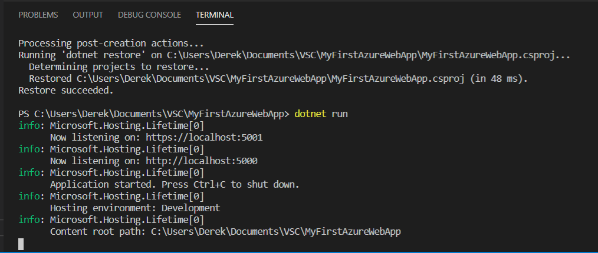
In the details above you can see the new web app is running locally at the following url, enter this url in your browser and you will see the test page:
https://localhost:5001
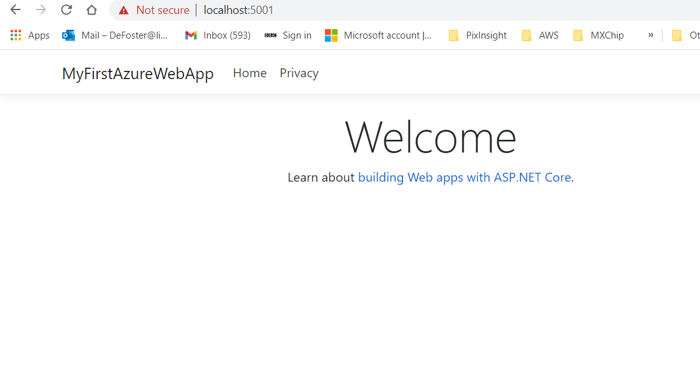
That is it in terms of create the basic web app template!
In VSC, you can look at the web app source files on the left pane file explorer, expand as shown in the screenshot below and you can see the index.html code that generated the webpage in previous screenshot:
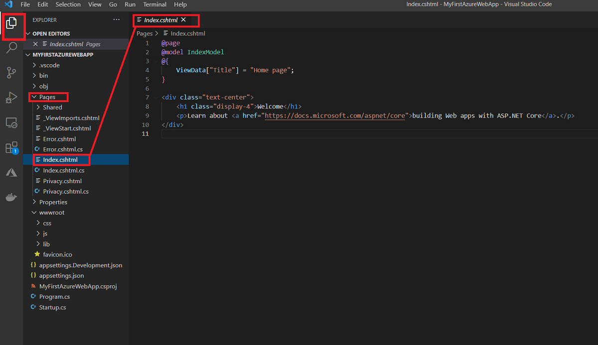
Next you are going to add the code to the web app to call your HTTP Trigger function that you created in workshop 6. The code in the web app will call the function to retrieve the sensor data in your Cosmos Database. It will not do any processing of the JSON data, instead it will simply add an iframe to the home page with the source of the iframe set to the function url. You are free to look at ways you can parse the data for a more formatted view but this requires extra independent work. A client side web app would almost always be part of an IoT stack and the purpose of this workshop is to show you how a web app can be created and what it can be used for as part of an IoT prototype stack, but you do not need to spend much effort on the web app at all.
You will need to run your HTTP Trigger code in another instance of VSC (with your current instance still open of course!) to get the local url of the function while it is running. Refer back to workshop 6 on how to run your HTTP trigger code and get the local url for it.
At this point you should have copied your function url from the other isntance of VSC. From the file explorer of the VSC instance with the web app,, open the index.cshtml file:
Change the code by replacing it all with the below. Essentially this is adding the iframe element, ensure its source is set to your local function url while its running in another instance of VSC.:
@page
@model IndexModel
@{
ViewData["Title"] = "Home page";
}
<div class="text-center">
<h1 class="display-4">Last Sensor Value</h1>
<p></p>
<iframe src="http://localhost:7071/api/temperature/">
</div>
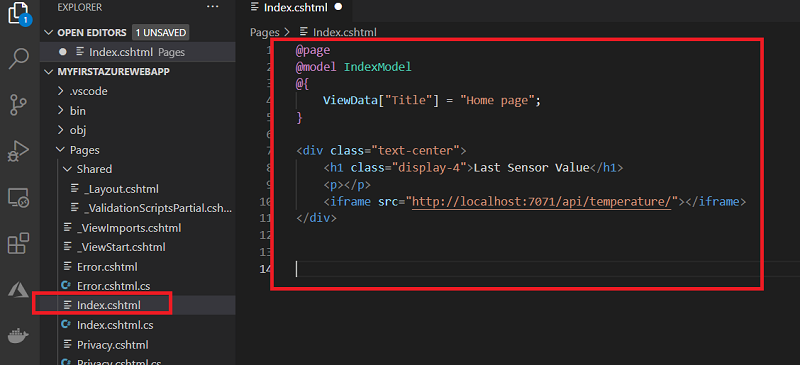
Now run the web app locally by gonig to Run>Start Debugging and copy the local url into your browser:
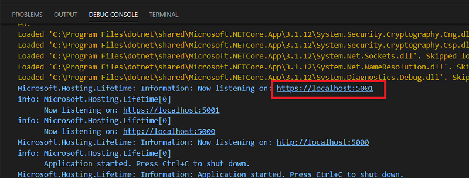
You should see the modified index.cshtml web page with the iframe that calls your HTTP Trigger function and displays the raw JSON data:
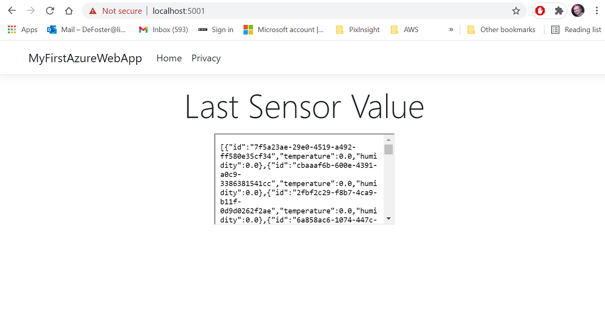
That is all the guided content for this week, please have a look at the independent tasks next. Next week the workshop will focus on showing you how to publish all of your functions to a production slot on Azure, as well as publishing your web app. When all of your services are published they will be addressable and running over the internet instead of locally.
For reducing the amount of JSON data displayed in your iframe, explore how you can use routes and parameters to select and return sensor data based on date or other filters you wish to use. You can also look at modifying the SQL query in your trigger function, however remember this is not standard SQL but is a variant of it designed for cosmos, read more about it here.